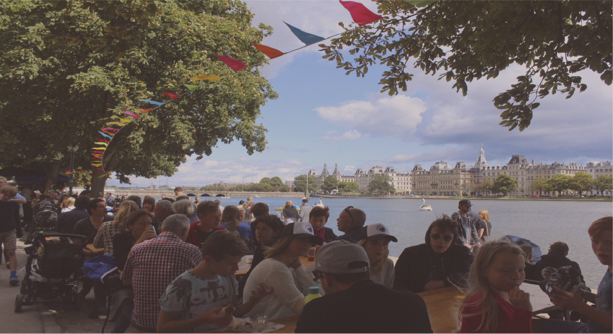

Donation
EN
We can’t save
the
world, but we can save
the Copenhagen lakes
 HELPING ANIMALS
HELPING ANIMALS
Swan nests from litter
Swan nests made from rubbish have again appeared on Copenhagen’s lakes.
The swans' nests can be seen to partly consist of litter likely thrown from popular
bridge Dronning Louises Bro, which connects the Inner City and Nørrebro areas.
The rubbish can be a serious danger to the swans as well as to other animals.
Plastic is particularly
dangerous because animals
can confuse it with
organic materials

United
150 volunteers
Clean
400 times
Raised
2.2 mln dkk
Saved
340 birds

Changing the world
always needs
volunteers
You can help
You can help the
lakes by donation or
volunteer work.
Choose what
you
can you
do best.
EVENTS
Join one of our events
To promote healthy and ecological lifestyle we organize some events. You are more than welcome to join!

Family picnic
Sun 6 Jan 2019, 12.00 am
Let’s spend nice family time around the lakes. If the sun will be on the sky we’ll provide blankets and heaters for people participating in the event. We will also have delicious warmboller freshly baked from the local bakery.

Sunrise photo session
Wed 26 Dec 2018, 7.00 am
Join our sunrise photography session around the lakes of Copenhagen. Our starting point will be Ostebro lake, where we will shoot pictures of the small island and the natural environment of the birds living there.

Sunrise photo session
Wed 26 Dec 2018, 7.00 am
Join our sunrise photography session around the lakes of Copenhagen. Our starting point will be Ostebro lake, where we will shoot pictures of the small island and the natural environment of the birds living there.
Meet our brave team

Volunteers can work with us as little as once a year or as much as once or twice a week. They can be individuals or organisations. You can choose a site that is close to your work or home and be involved in accommodation, employment, administration, events, fundraising or retail.

You can choose a site that is close to your work or home and be involved in accommodation, employment, administration.